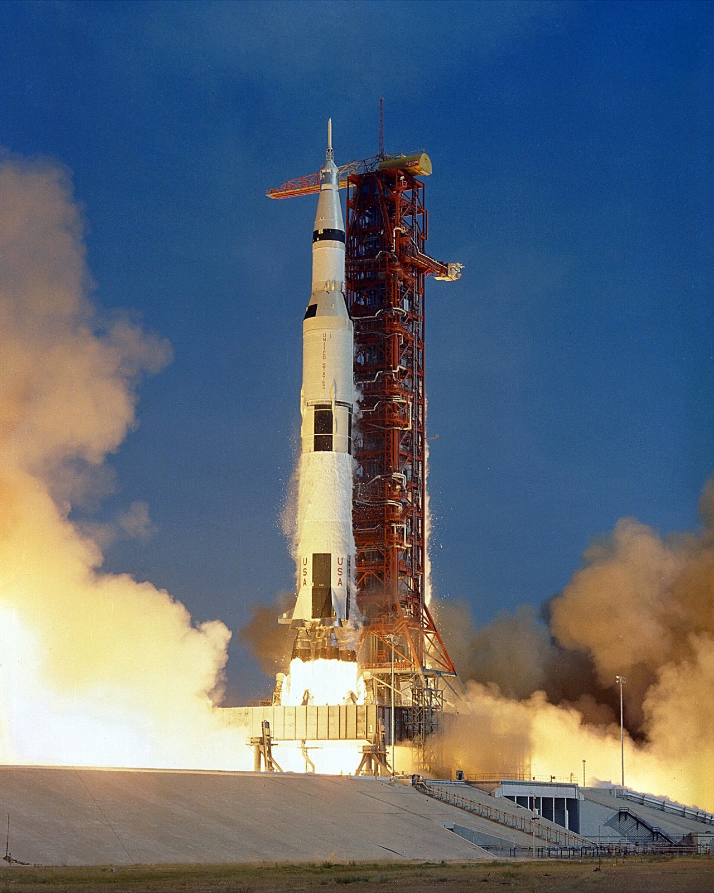
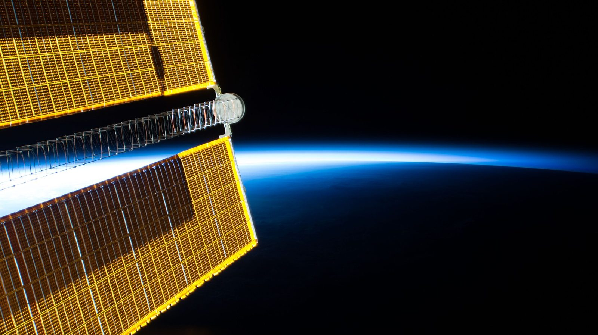
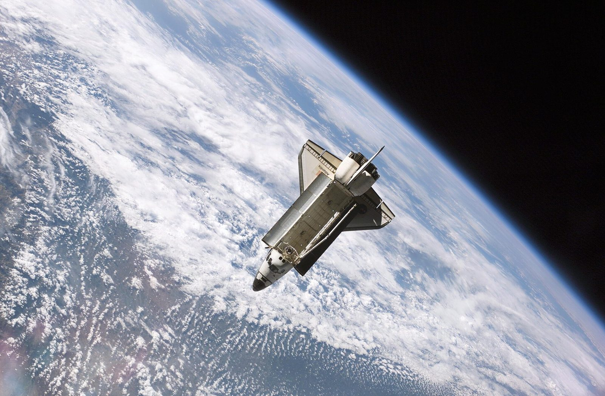
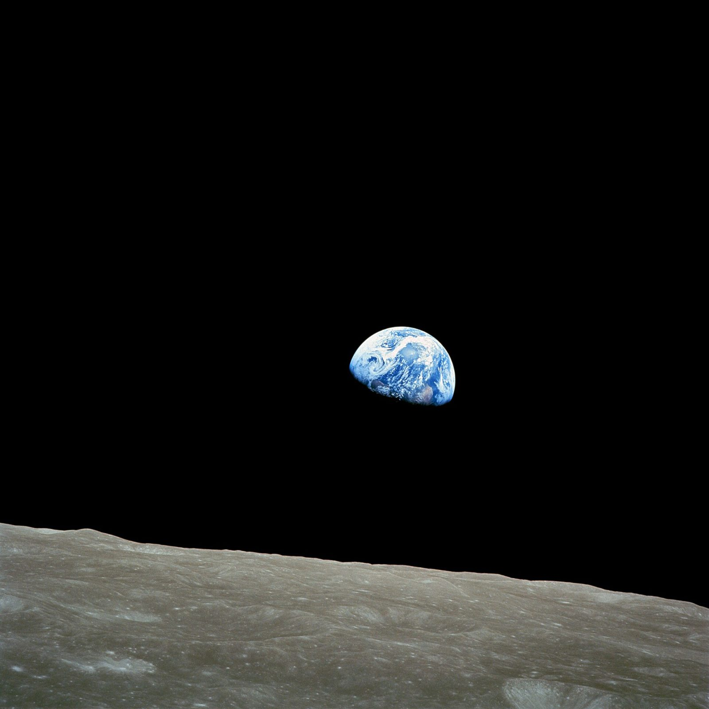
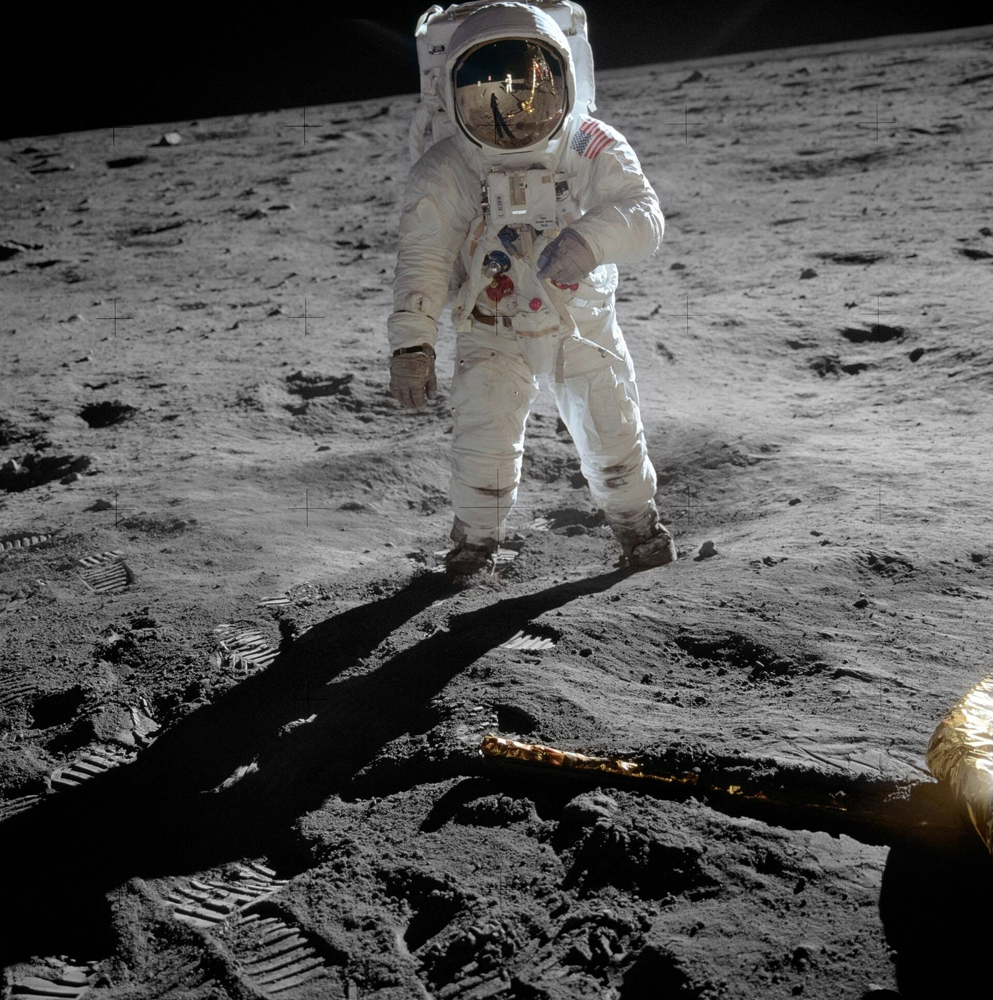
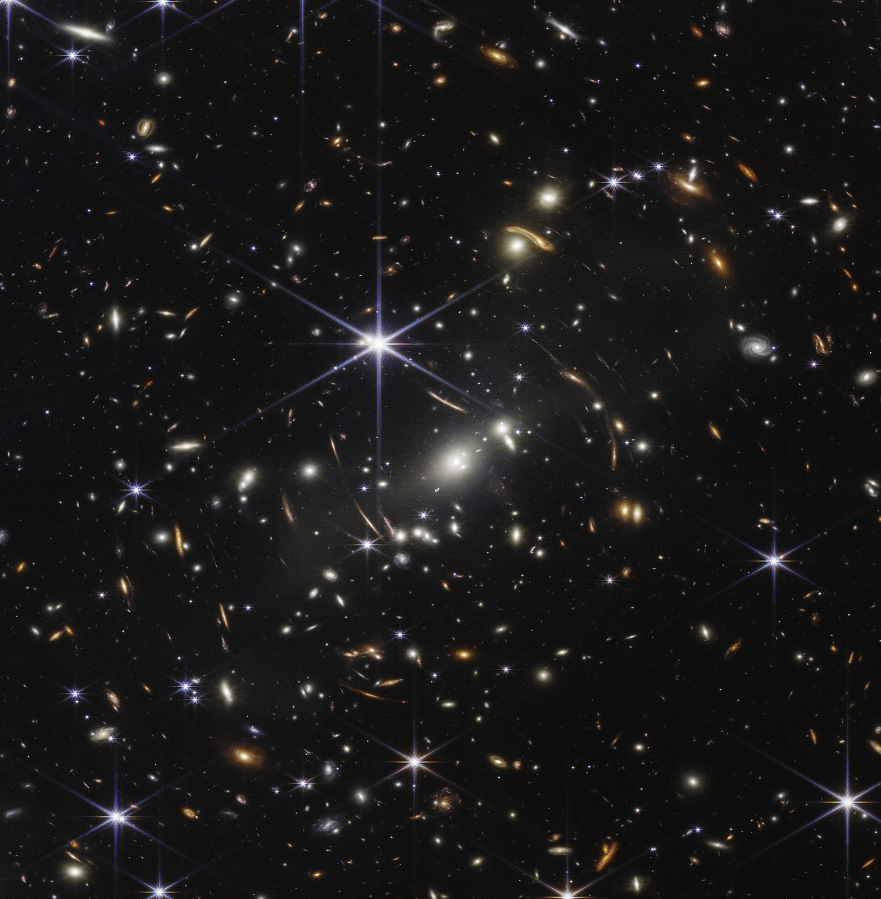
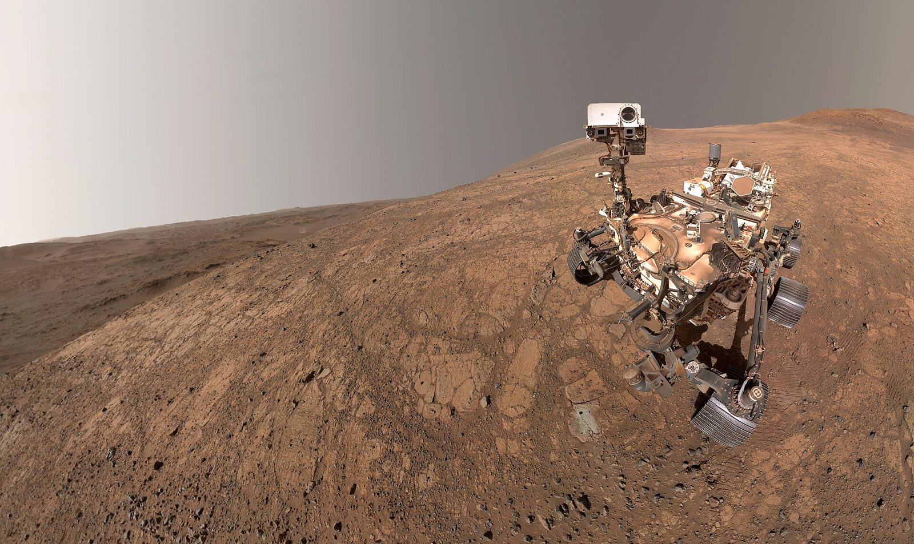
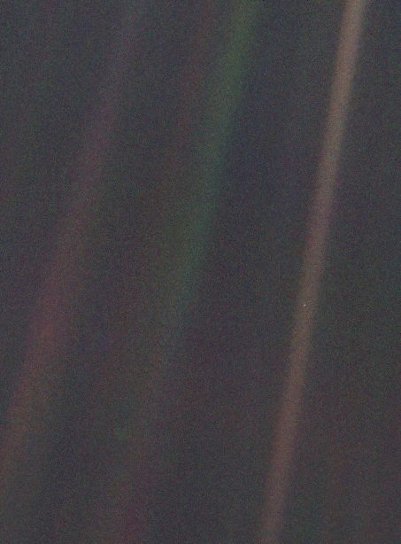

Stop 00 · Launch Complex 39A
0km
Hold on.
We're leaving.
Since 1958 NASA has been pushing the edge of where people and machines can go. Scroll to ride the distance, from the pad to the farthest thing humans ever built.
Start the countdown
Stop 01 · The Kármán line
100km

Space starts closer than your next road trip.
One hundred kilometres up, the air is too thin for wings to work. That line is the usual border of space. Everything beyond it is NASA's territory.
Stop 02 · Low Earth orbit
408km

A house that goes round the world every 90 minutes.
The International Space Station has had people living aboard without a break since November 2000. The Space Shuttle flew 135 missions and helped build it.
- Speed
- 28,000 km/h
- One orbit
- ~90 min
- Sunrises a day
- 16
Stop 03 · The Moon
384,400km

Twelve people have walked here.
Between July 1969 and December 1972, six Apollo crews landed on the Moon. Neil Armstrong and Buzz Aldrin went first, on 20 July 1969. Nobody has been back since. NASA's Artemis program is built to change that.

Stop 04 · Lagrange point 2
1,500,000km

A telescope that looks back in time.
The James Webb Space Telescope launched on 25 December 2021 and parks four times farther away than the Moon. Every dot in this picture is a galaxy. Some of that light left them more than 13 billion years ago.
- Mirror
- 6.5 m
- Sunshield
- tennis court
- Runs at
- −233 °C
Stop 05 · Mars, on average
225,000,000km

Robots go first. They have been there for decades.
Perseverance landed in Jezero crater on 18 February 2021 to look for signs of ancient life. It carried Ingenuity, the first helicopter to fly on another planet. A radio message takes between 3 and 22 minutes to arrive.
Stop 06 · Voyager 1 · and counting
25,000,000,000km

That speck is us.
Voyager 1 launched in 1977, flew past Jupiter and Saturn, then turned its camera home one last time from 6 billion km away. Earth is less than one pixel. In 2012 it became the first human-made object in interstellar space. It is still sending data back.
"That's here. That's home. That's us."Carl Sagan
NASA,
by the numbers
- 1958Founded on 29 July, a year after Sputnik
- 12People who have walked on the Moon
- 135Space Shuttle missions, 1981–2011
- 5Rovers driven on Mars
Right now
Where NASA is going next.
- 01ArtemisCrewed flights back to the Moon, aiming for its south pole and a longer stay this time.
- 02Europa ClipperOn its way to Jupiter's icy moon Europa, which hides an ocean under its crust.
- 03DragonflyA drone-sized rotorcraft planned to fly across Titan, Saturn's largest moon.
- 04Webb + HubbleTwo space telescopes still sending back new pictures every week.